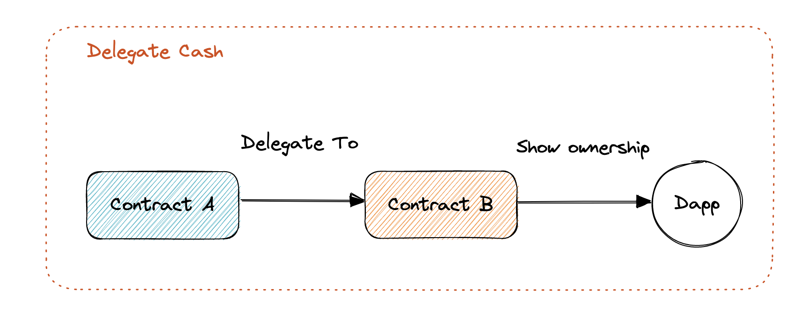

Delegate Cash 合约分析
1.
最近猴子游戏 Dookey Dash 很火，这个游戏可以看成神庙逃亡的下水道版本，跑得越远，分数越高。但是很多人手残（比如我），很难玩出高的分数，于是游戏代打很自然的出现的了。
但是有个难处理的细节，代打的人如何获取到门票的授权？总不能直接把钱包给出去或者把游戏门票（Sewer Pass）转出去，这样太不安全了。在这里的关键就是怎么去证明你拥有这个资产的所有权，但是又不威胁到资产的安全。
在这个过程中，我发现有一个合约很好地解决了这个问题，就是这个 Delegate Cash。这个合约可以解决很多场景下资产所有权的问题：
- 比如上面的代打场景
- 保护资产安全，在加群或者领空投时，不想直接操作钱包

整个流程就是在 Delegate Cash 合约，你可以把自己的地址 A 代理给另外一个地址 B，B 拿到这个代理之后，能证明这些资产是属于你的，但是同时 B 合约无法操作 A 合约中的任何资产。这点很重要，这样即使 B 合约被钓鱼了或者私钥泄漏了，地址 A 中的资产也是安全的。
2.
Delegate Cash 有三种代理模式：
- 代理一个 token
- 代理一个合约地址
- 代理整个地址
// 代理整个地址
function delegateForAll(address delegate, bool value) external;
// 代理某个合约地址
function delegateForContract(address delegate, address contract_, bool value) external;
// 代理一个 token
function delegateForToken(address delegate, address contract_, uint256 tokenId, bool value) external;
用户所有的代理信息都被存储在下面两个变量中：
mapping(address => EnumerableSet.Bytes32Set) internal delegationHashes;
mapping(bytes32 => IDelegationRegistry.DelegationInfo) internal delegationInfo;
delegationHashes 中存储的是相关代理信息（比如代理地址、被代理地址、被代理的合约或者 token）算出来的 hash， delegationInfo中存储的是这些信息的原文。
绑定代理和解除代理都是通过下面这个方法来实现:
function _setDelegationValues(
address delegate,
bytes32 delegateHash,
bool value,
IDelegationRegistry.DelegationType type_,
address vault,
address contract_,
uint256 tokenId
) internal {
if (value) {
delegations[vault][vaultVersion[vault]].add(delegateHash);
delegationHashes[delegate].add(delegateHash);
delegationInfo[delegateHash] =
DelegationInfo({vault: vault, delegate: delegate, type_: type_, contract_: contract_, tokenId: tokenId});
} else {
delegations[vault][vaultVersion[vault]].remove(delegateHash);
delegationHashes[delegate].remove(delegateHash);
delete delegationInfo[delegateHash];
}
}
如果 value 为 true，则是绑定代理，如果 value 为 false，则是解除代理。然后还提供了一系列的查询方法来检查代理关系是否存在。
整体的逻辑就这些，相当简单。但是还存在一个小问题，如果在使用的过程中，绑定了很多代理关系，一个个去解绑就会浪费很多 gas，所以还需要一个一件解绑所有代理的功能，Delegate Cash 的实现相当巧妙。
引入了下面两个 version 的 map，其中 valutVersion 记录的是地址的版本，在当前的合约实现中，这个 map 的值的返回值一直是 0，delegateVersion 中记录的是当前这次代理的版本。
mapping(address => uint256) internal vaultVersion;
mapping(address => mapping(address => uint256)) internal delegateVersion;
这两个 Map 中存储的版本信息在每次算代理信息 hash 的时候会被用到：
function _computeAllDelegationHash(address vault, address delegate) internal view returns (bytes32) {
uint256 vaultVersion_ = vaultVersion[vault];
uint256 delegateVersion_ = delegateVersion[vault][delegate];
return keccak256(abi.encode(delegate, vault, vaultVersion_, delegateVersion_));
}
所以在取消对某个地址的全部代理时，只需要对这个版本号加 1：
function _revokeDelegate(address delegate, address vault) internal {
++delegateVersion[vault][delegate];
}
这样就会让后续检查代理时的 hash 对比都会失败，对应的代理关系也全部失效：
if (delegationHash == _computeAllDelegationHash(vault, delegationInfo_.delegate)) {
//....
}
后续在其他的 DAPP 中，如果要检查用户是否拥有某个资产，只需要来检查这个代理关系就可以:
address requester = msg.sender;
if (_vault != address(0)) {
bool isDelegateValid = dc.checkDelegateForContract(msg.sender, _vault, NFT_CONTRACT);
require(isDelegateValid, "invalid delegate-vault pairing");
requester = _vault;
}
3.
通过这样的一个简单的合约，就可以在安全的情况下来证明用户是否拥有某个资产。这个也符合链上资产使用习惯，在大多数场景中，只需要证明资产是自己的，但很多人的资产就是在这个证明的过程中丢的。
这个合约对 gas 的消耗很大，在使用的过程中，要尽量减少代理和取消代理的次数。
参考链接
[1]https://delegate.cash/ [2]https://etherscan.io/address/0x00000000000076A84feF008CDAbe6409d2FE638B#code